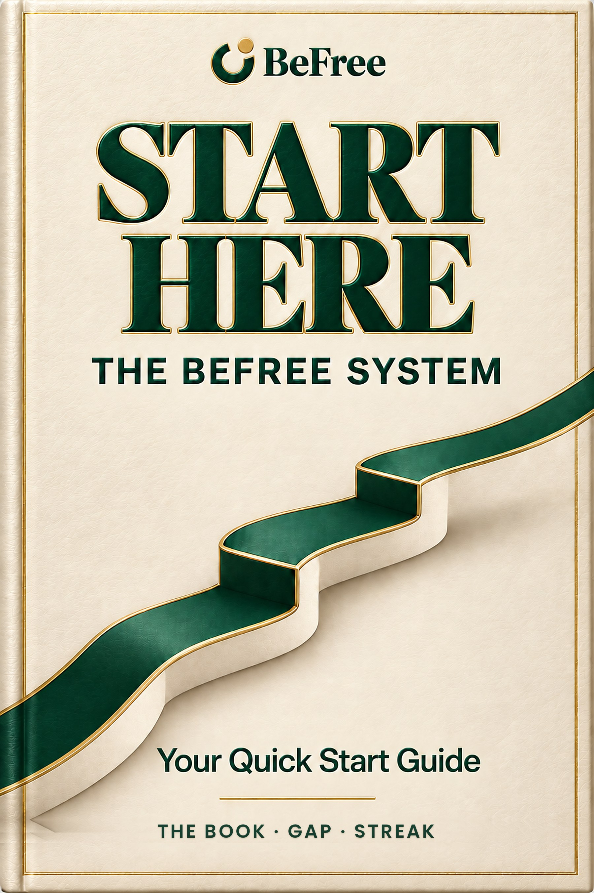
The book explains the decisions. Gap keeps the financial record. Streak keeps the logging alive.
| The bookThe Anti-Paycheck Trap | Why the gap closes on people who work hard, and what to do about it in order. You read it once, then keep it for reference. |
| The trackerBeFree Gap | Records income, living costs and transfers, shows what is safe to spend until payday, and plans the paychecks ahead. |
| The habitBeFree Streak | Supports small daily actions and coming back after a missed day. A habit tick does not certify complete financial records. |
The book sets the target. Gap shows the real number and what is eating it. Streak makes the daily entry a thing you do without deciding.
Gap and Streak are two separate apps, each with its own icon on your phone or computer. They do not share data or pass anything between them: Gap holds the money record, Streak holds your habits. Another device, browser or profile keeps its own separate copy of each.
Gap’s numbers and suggestions are only as good as what you enter. Check them against your statements before you act. Your records stay on this device unless you export them. Nothing is sent to us, and there is no account to lose. Save a dated backup from each app every week and after setup or major changes. Encrypted backup in Settings locks the file with a passphrase that nobody can recover for you.
The gap is received income less living costs and required debt payments. Savings and extra debt payments assign that gap.
Most people never learn their number. They know roughly what they earn and roughly what rent costs, and the space between those two facts stays a feeling instead of a figure. A feeling cannot be widened. A figure can.
One spine, and it is the book’s. Start at the lowest phase you cannot yet tick, not at phase one because the list starts there. The full checklist for each is Appendix A of The Anti-Paycheck Trap.
| 1 · Stabilize | Clears when one full pay period passes with no overdraft and no late fee. |
| 2 · Map | Clears when your gap is positive for a full month and one transfer has cleared. |
| 3 · Protect | Clears when Buffer Rung 1 is funded and nothing has gone on a card for 30 days. |
| 4 · Build | Clears when it runs without you thinking about it. |
| 5 · Scale | Clears when one engine has produced income in three separate months. |
| 6 · Invest | Clears when one automatic investment has cleared and the fund is chosen. |
| 7 · Walk | Clears when savings cover one full year of your costs. |
| 8 · Cross | Clears when the portfolio earns more in a year than you put into it. |
Nothing has gone wrong. You have just finished the hardest part, which is looking. The book has a short section written for exactly this, called When the Math Doesn’t Close, and it comes before everything else.
Work straight down the list. Do not read the book first. The book lands harder once you have seen your own number on a screen.
| Task | Time |
|---|---|
| Setup, once | about 15 min |
| Logging a spend | under 30 sec |
| Ticking a habit | a few seconds |
| The ten-minute Sunday review | 10 min |
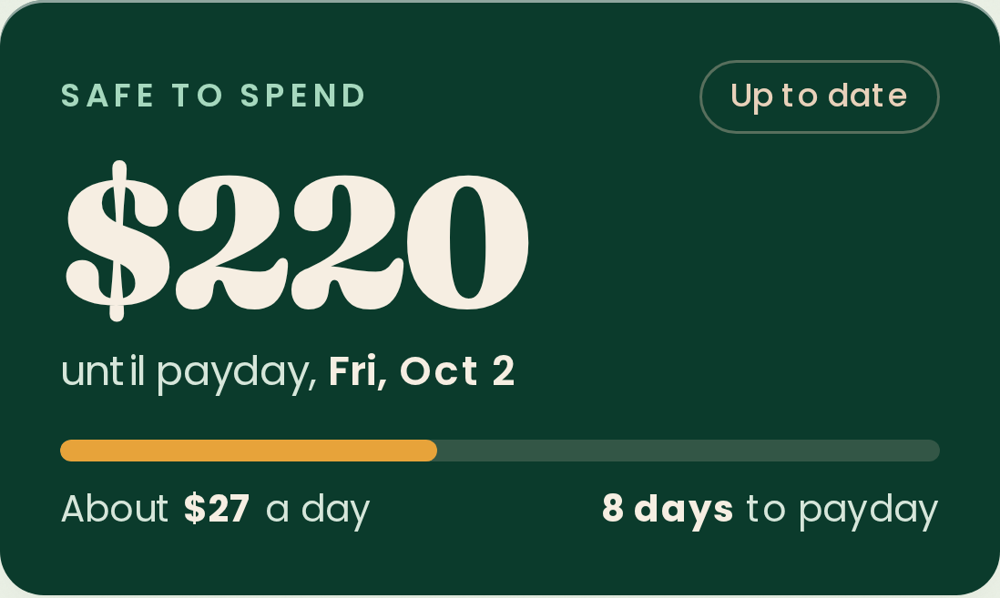
The first thing Gap shows: what is safe to spend until your next payday.
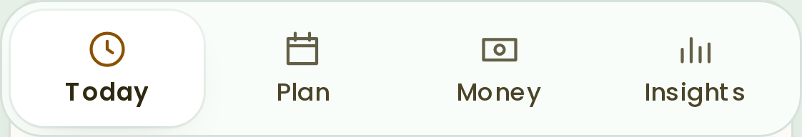
Four places: Today, Plan, Money (ledger, goals and debts) and Insights.
The first setup screen offers to show you around with sample numbers. Clear them from Settings with Clear everything and start over before you enter anything real. Sample entries mixed with your own make every average and every suggestion worthless.
Starting too big. Begin with one useful habit and one affordable goal. Add more only when the routine is manageable. Missed days call for a smaller next action, not an invented record.
Install Gap and Streak from the installation sheet. Enter real data from the icon you intend to keep using, not a browser tab. Then check your backups.
Both apps install from one page, on the phone or computer you will actually use:
The installation sheet in this bundle shows the steps for iPhone, Android, Windows and Mac.
Each app keeps its record on this device, inside the installed app. Another browser, profile or device has its own separate storage, and the apps do not sync. Keep dated backups. Require a PIN to open hides the screen; it does not encrypt the record.
Clearing site data, private browsing, device loss or storage cleanup can remove records. Check the installed app and your backups before clearing anything.
In each app: Settings, Save a backup file. Keep private, dated copies. Restore a Gap file in Gap and a Streak file in Streak. Save the current record first: restoring replaces it.
Open each app once while online, then test opening it with no signal. Updates arrive over the network the next time you are online.
Get this one distinction right and every screen in Gap reads itself. Get it wrong and the app will quietly give you the wrong advice for months.
| Income | Fixed | Variable | |
|---|---|---|---|
| What it is | Money arriving | Recurring bills | Other spending |
| Examples | Paycheck, tips, freelance receipts | Rent, phone, insurance, the car payment, card minimums | Groceries, gas, takeout, that thing on the way home |
| Behavior | Anything that lands in your hands | Recurring; the amount may change | Can be essential or optional |
Gap = received income − living costs − required debt payments. A transfer moves or assigns money: savings, tax reserves, funds and extra debt. Paying off a card does not count a recorded purchase twice.
A utility bill may change amount and still belong under Fixed. Groceries are usually Variable. Essential versus optional is a separate decision.
Gap also asks whether a category is essential or optional. Groceries vary but are essential; a streaming plan is fixed but optional. The until-payday figure and the suggestions run on that second answer.
| Rent, mortgage | Fixed | Extra card payment | Transfer |
| Groceries | Variable | Money set aside for tax | Transfer |
| Electric bill | Fixed | Gas for the car | Variable |
| Card minimum | Fixed | Savings contribution | Transfer |
These transfers assign the gap; they do not reduce income or create another expense.
Everything else in Gap is a way of explaining this one number.
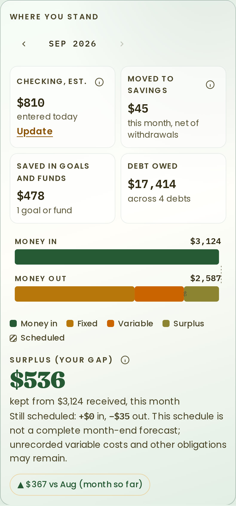
Open Insights. Where you stand sits at the top. The green bar is everything that came in. The bar below it is everything that went out: gold for fixed bills, orange for variable spending. What is left over, in olive, is your surplus, and that is your gap.
Both bars are drawn to the same scale, so the picture is honest. When money out passes money in, the shortfall shows hatched and the number turns red. Beneath the number sits the change against last month.
The chips underneath change what every card on the screen is counting: this month, the last 30 days, the last 90, the last 12 months, all time. Read the gap in This month during the month, because that is the number you can still change. Read it in Last 90 days on a Sunday, because that is the one that says whether anything is improving.
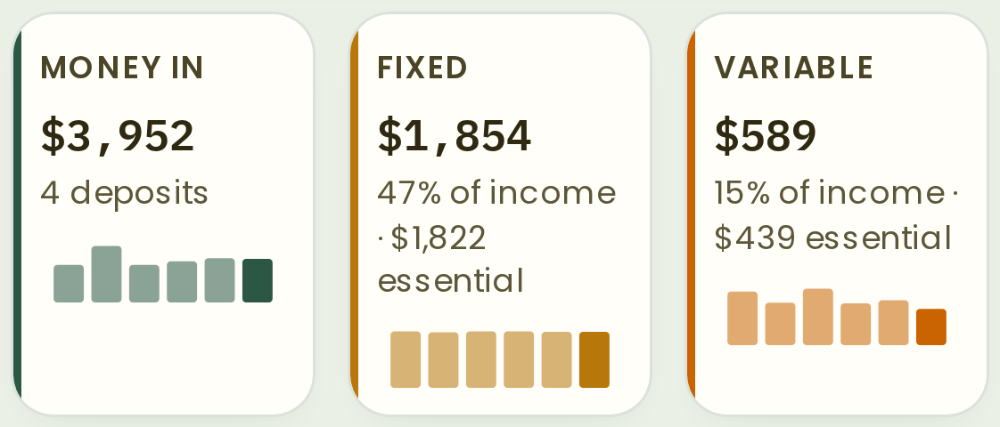
Money in, fixed and variable, each with its share of income and how much of it is essential.
The tiles summarize recorded income and spending. Essentials as a share of take-home. Past 60%, earning beats cutting. Past 85%, move a big cost or raise income. High housing, childcare or health costs may require income, benefits or major-cost changes.
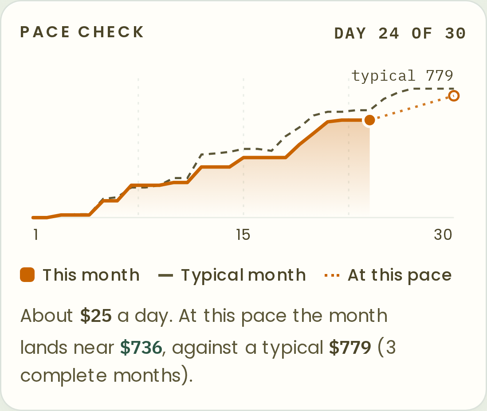
This month’s variable spending against a typical month, with where this pace lands.
One question: is your variable spending running faster than the month itself? The solid line is what you have spent so far. The dashed line is a typical month. If you are under the dashed line you are winning. The dotted line projects where the month lands if nothing changes, and it arrives on the 12th rather than the 30th, which is the whole point of it.
Typical uses the months you have closed. Historical charts still show records from open months and may be incomplete. No entries does not mean zero spending.
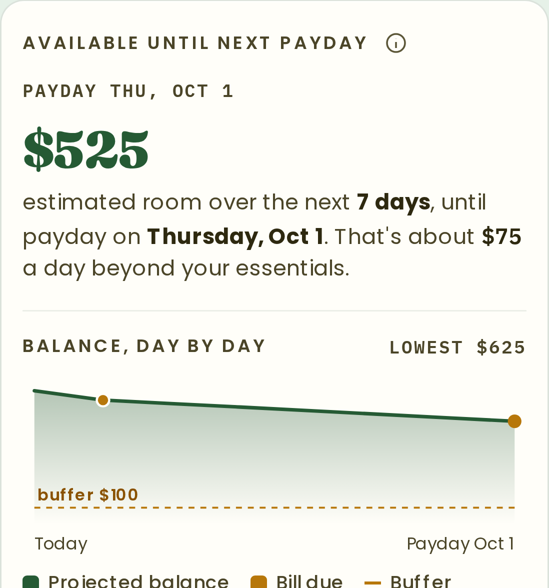
Available until payday protects recorded bills, essentials, buffer, funds, card purchases and tax needs. Update checking and review missing obligations first.
The round + button, or Log a purchase on Today, is the whole app. Everything else is decoration on top of what you put through it.
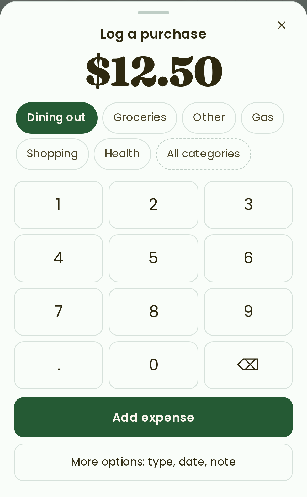
01020304Not the day it clears your bank. A card swipe on Friday that posts on Monday belongs to Friday, because Friday is the day the decision was made.
Tap an entry in Money, Ledger to edit it. After a correction to an old month, update checking and debt again and review that month. Saved figures must agree with statements.
This is a refund. Money back on something you bought. It lowers spending in that category instead of counting as income, which keeps your income line honest.
Planned, not done. An entry you have not confirmed yet waits under Coming up. Gap treats it as still owed until you say it happened.
Money, Ledger, Import a bank file reads the CSV or OFX/QFX file your bank lets you download (Chase, Bank of America, Wells Fargo, Capital One and most others). Gap suggests a category for each line and skips entries you have already logged. Nothing connects to your bank: you download the file, and it never leaves your device.
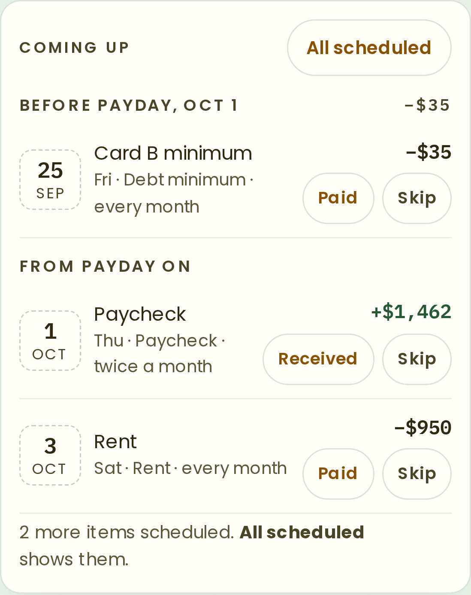
Coming up on Today: planned bills and paychecks wait here until you confirm or skip them.
The split asks where the protected available amount should go. Confirm a current checking balance and the obligations before payday; do not automatically divide the whole deposit.
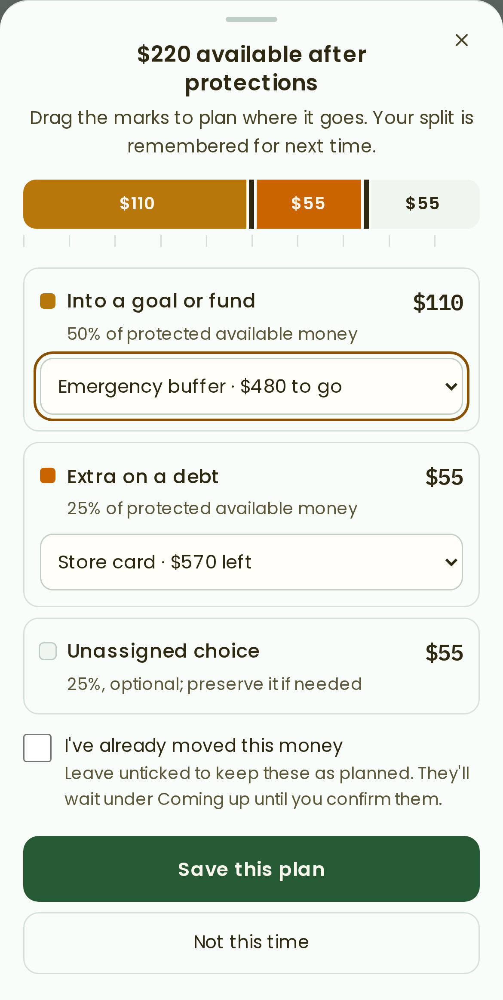
Where is this money going? Not next week, when it has already gone somewhere. Now, in the eleven seconds after it arrived.
When you confirm a paycheck and you have a goal or a debt, Gap offers this split. Drag the two marks; the bar and the three rows update as you move them. If Gap is missing today’s balance or your bills, it asks for those first.
| Into a goal or fund | Choose a goal or fund. A planned transfer counts as saved only after you confirm it happened. |
| Extra on a debt | The list is already ordered by whichever payoff method you chose, so the top option is the one costing you most. |
| Unassigned choice | An optional amount left unassigned. Choose zero when necessities or urgent obligations need it. |
Leave I’ve already moved this money unticked and the shares wait under Coming up until you confirm them. Tick it once the transfers are actually done. The app records what happened; your bank decides what happens.
The percentages are editable examples, not requirements.
The split is optional. Keep transfers planned until money moves, then confirm the existing entry. Do not add a second completed copy of the same transfer.
Money, Debts asks you once to pick Highest rate first (costs least) or Smallest first (closes an account sooner), and every screen follows it, including this one. The debt list is ordered the same way. The worst choice is spreading spare money evenly across all of them.
Protect necessities and urgent payments. Build an affordable starter cushion. Review employer match, vesting and affordability alongside costly debt. Then expand reserves and long-term investing as circumstances allow.
A repeat is a planned bill or paycheck. It appears on the expected date, but it does not enter completed totals until you confirm the amount and that it happened.
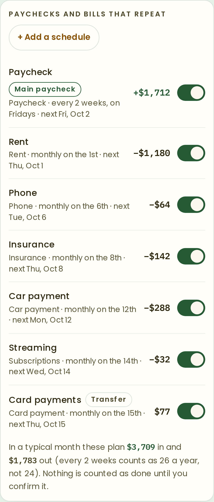
Without repeats your gap looks enormous on the 2nd and terrible on the 15th, because rent has not been typed in yet, and neither figure has ever been true.
Setup builds these from the bills you filled in. Anything you missed is added in Money, Ledger, under Paychecks and bills that repeat. Each line shows the day, the amount and a switch. Tap a line to edit it.
On the Today screen each one waits under Coming up with Paid and Skip.
If an amount moves a little each month, put in the typical figure and correct the entry when the real bill arrives. A repeat that is twenty dollars off beats a bill that is missing entirely. Switching a repeat off stops future entries without deleting the history.
A repeat records a bill. It does not pay one. Nothing in either app moves money. Set the autopay at your bank, then confirm it here.
For a predictable bill that is not monthly, create a sinking fund in Money, Goals with its target, current balance and due date. Gap works out the set-aside per paycheck. Confirm real transfers with Set aside and record withdrawals with Pay from it; a plan does not prove the money is already there.
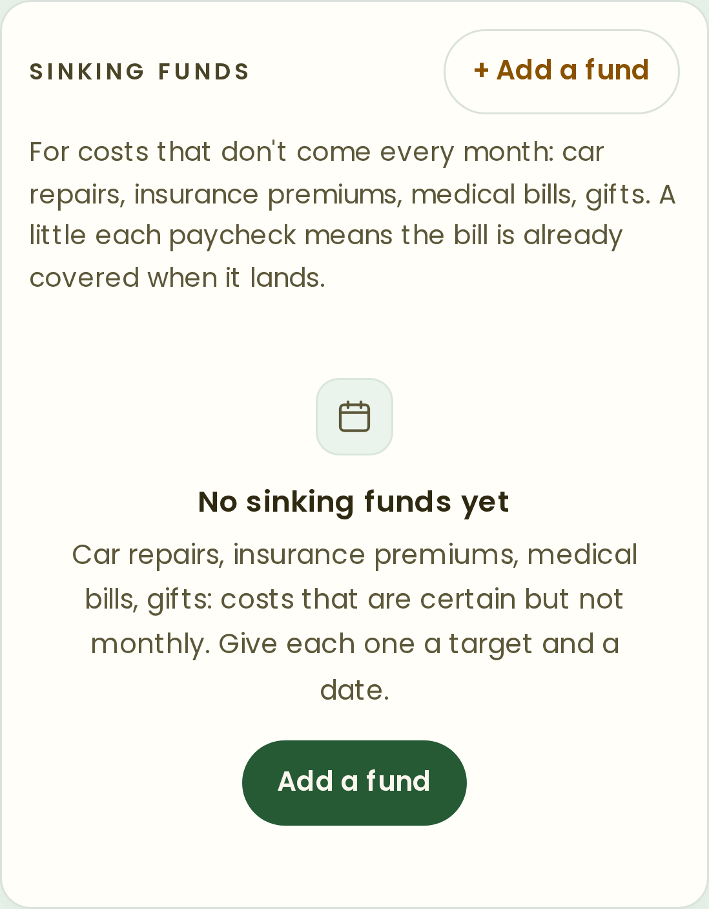
A fund knows its own due date, so it can tell you when it is behind.
Your next best step organizes prompts from the figures you enter.
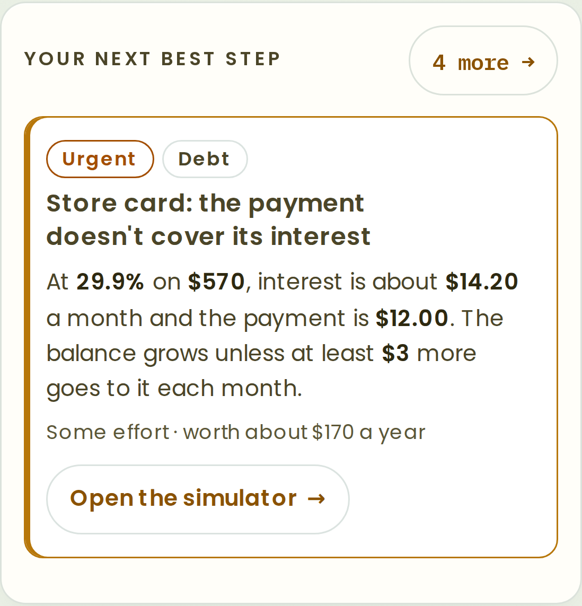
It sits on the Today screen: one suggestion at a time, with the arithmetic behind it and a button that acts on it.
The order is deliberate: what is urgent first, then what the move is worth over a year, then how hard it is. Ten pieces of advice at once is the same as none, so the card shows one and keeps the rest behind more.
Prompts can flag debt interest, changing spending, estimated tax-reserve shortfalls, funds and buffer coverage. A reserve estimate is not a tax bill.
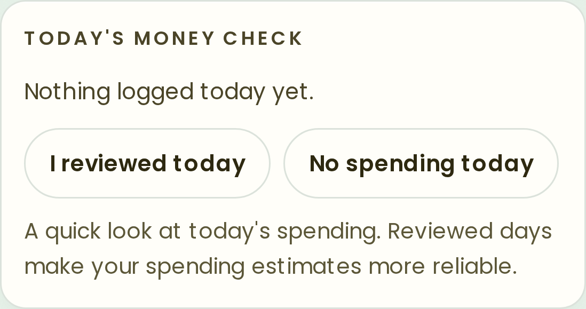
Today’s money check: the two-minute version, for a day when you are not reading anything.
A call you meant to make lives better on a list with a due date than in your head. When a suggestion means a one-off job, such as calling about a rate, add it to Money to-dos in Streak. It takes ten seconds and the two apps stay separate.
Most money trouble is a timing problem. Plan lays out the next few paychecks and which bills each one has to cover.
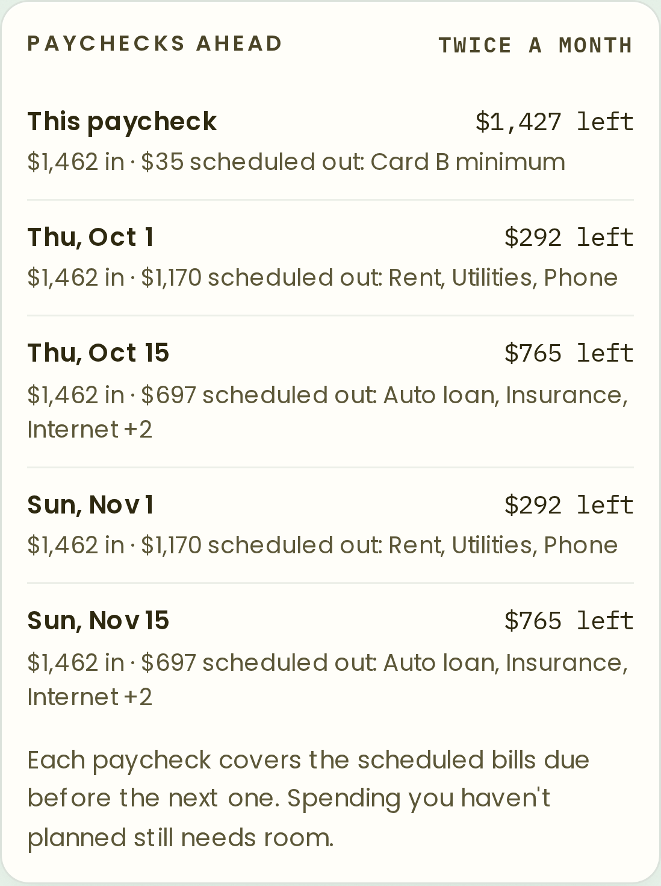
Paychecks ahead. Each paycheck, the scheduled bills due before the next one, and what is left. A short line here is a warning weeks in advance, not on the morning rent is due.
Extra paychecks. Paid every two weeks? Two months a year bring a third paycheck. Plan names them, so the extra money gets a job before it arrives.
Bill calendar. Every bill and payday on a month grid. Add the next 12 months to my calendar saves a calendar file that Apple Calendar, Google Calendar and Outlook can import, with a reminder the day before each bill. Amounts are left out unless you choose to include them.
| Employer 401(k) match | Enter your pay, what you put in and your employer’s formula. Plan shows the match you get and any you leave on the table each year. |
| Pay later plans | In Money, Debts, a Pay later purchase records each installment as a scheduled bill, so four small payments stop hiding inside one checkout. |
| Credit card use | Add each card’s limit and statement day to see how much of your available credit you are using. General information, not a score prediction. |
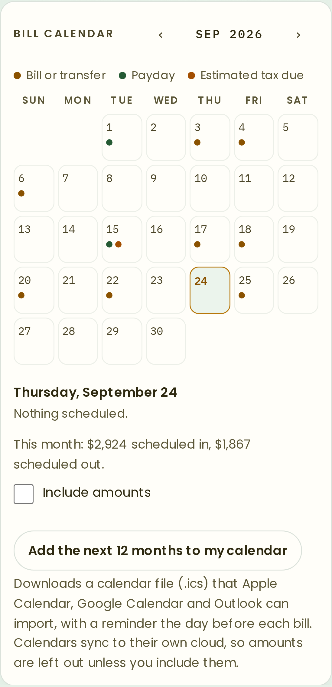
The bill calendar: dots mark bills and paydays; tap a day to see what is due.
Due dates, mileage rates and plan limits change. Confirm current figures at irs.gov and with your plan administrator. Estimates are not tax or investment advice.
Standard budgeting assumes a number that arrives on the same day for the same amount. If your income moves week to week, that advice does not fail you slowly. It fails you immediately.
In Gap, open Settings, Pay schedule, and tick My paycheck amount changes. Every forecast is then built from your lowest recent paycheck rather than the average, and an Income that varies panel appears on Insights. If you told setup your pay moves, it is already on.
| Your baseline week | Annual essential costs divided by 52. Compare it with a lean month of actual receipts. If receipts are below essentials, seek income or support rather than calling the shortfall a spending allowance. |
| This week runs on last week | Spend the money you earned two weeks ago, not the money you are earning now. Getting one week ahead is the hardest part, and it changes everything after. |
| Estimated taxesForm 1040-ES | For freelance, gig or other income with no tax withheld. Turn on the tax reserve to see each quarterly due date, moved to the next business day when it falls on a weekend or holiday, and what to set aside. |
| Mileage log | For gig driving, deliveries or other work trips: date, miles, destination and business purpose, the details the IRS asks for, with a spreadsheet export. |
A good week feels like a raise, so it gets spent like one. A bad week feels like a crisis, so it gets covered with a card. Over a year the weeks roughly cancel out, but the spending and the interest do not.
BeFree Academy does not provide tax advice, and an accountant will give you a better number than any app can.
A workable routine helps you return to the record.
BeFree Gap is only as good as the entries in it, and the entries only exist if you keep making them on days when nothing feels urgent. That is a habit problem, not a money problem, and it needs its own tool.
Streak puts did I do the thing on a screen every day and makes the unbroken run visible enough to be worth protecting. It opens with a library of money habits rather than a blank page: Log today’s spending sits at the top, because every chart in Gap is downstream of whether you logged yesterday. Start that one.
Log today’s spending works because you either did or you did not. Be better with money cannot be ticked, which means it cannot be a habit.
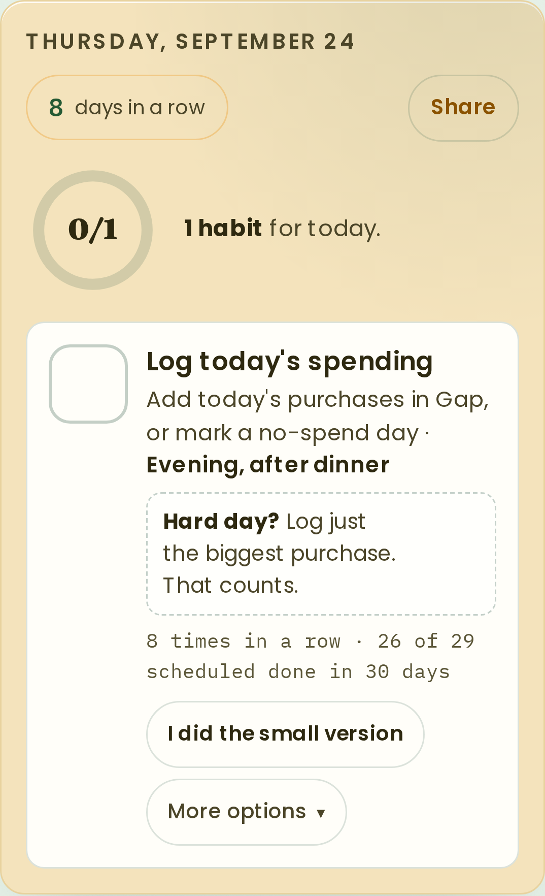
The date, the run, and one row per habit due today.
A small version supports continuity: I did the small version keeps the day without pretending it was a full one. The small version keeps your run. It does not complete the day’s record.
A day you mark as no-spend ticks Log today’s spending by itself. Streak does not read Gap, so everything else you tick yourself.
| All of it, or none of it | The all-habits streak counts a day when every due habit is done. The 30-day rate also shows partial progress. |
| A rest day is invisible | A day with nothing scheduled is skipped entirely. A habit set to weekdays keeps its run alive across every weekend. |
| Today stays open | An unfinished today never breaks the run. The day is judged only once it has passed. |
Five habits means five chances to break the day, and a broken day breaks the run. Start with one, add a second only after a month of clean days, and never run more than four. A low completion rate is rarely a discipline problem. It is a design problem, and the fix is fewer habits.
You will lose a run. Check the month grid in Progress first, because sometimes you did the thing and forgot to tick it, and backfilling is honest. Then look at Coming back, and start again today rather than on Monday. A run of 1 beats a plan to begin later.
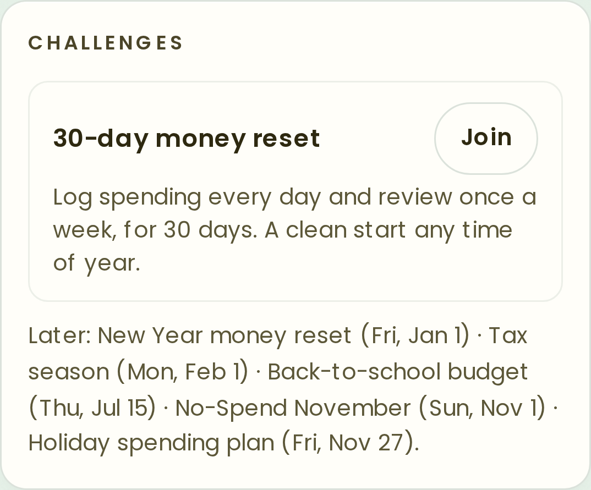
The Challenges tab offers short, dated runs: a 30-day money reset any time, and seasonal ones such as a New Year reset, tax season, back-to-school and No-Spend November. Joining one adds its habits for that window only. Share on the Today card makes an image of your run, with no money figures in it.
Not everything is a habit. Some money jobs are done once and then gone.
Cancel a subscription. Call about a rate. Set up an autopay. Ask for the self-pay discount on a bill. These have no rhythm, so putting them among your habits would only break a run you were keeping honestly.
Streak keeps them apart, under Money to-dos. A to-do can have no date, a date, or Before payday. And it has a field most to-do lists never think to ask for: what it is worth per year.
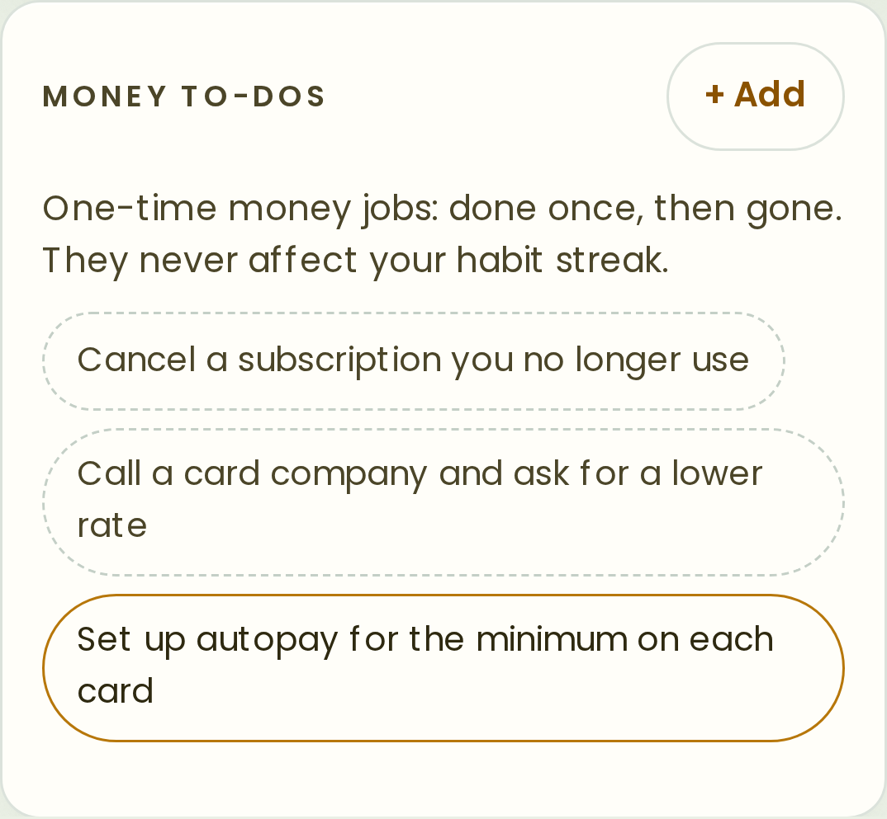
One-time jobs, with ready-made ideas to start from.
A $16 monthly subscription suggests $192 a year if the cancellation lasts. Done to-dos add up their yearly figures. A completed task is not proof of that saving: confirm the actual cost change in Gap and review the result later.
Daily logging, weekly review and monthly reconciliation all take time.
| Every day · 30 sec | The ten-minute Sunday review | First of the month · 15 min |
|---|---|---|
| Log what you spent, as it happens | Read Pace check | Check the repeats that posted |
| Plan any money that arrived | Read the suggestion and act on one | Close last month in Insights |
| Tick the habit in Streak | Glance at the 12-week bars | Save a backup from each app |
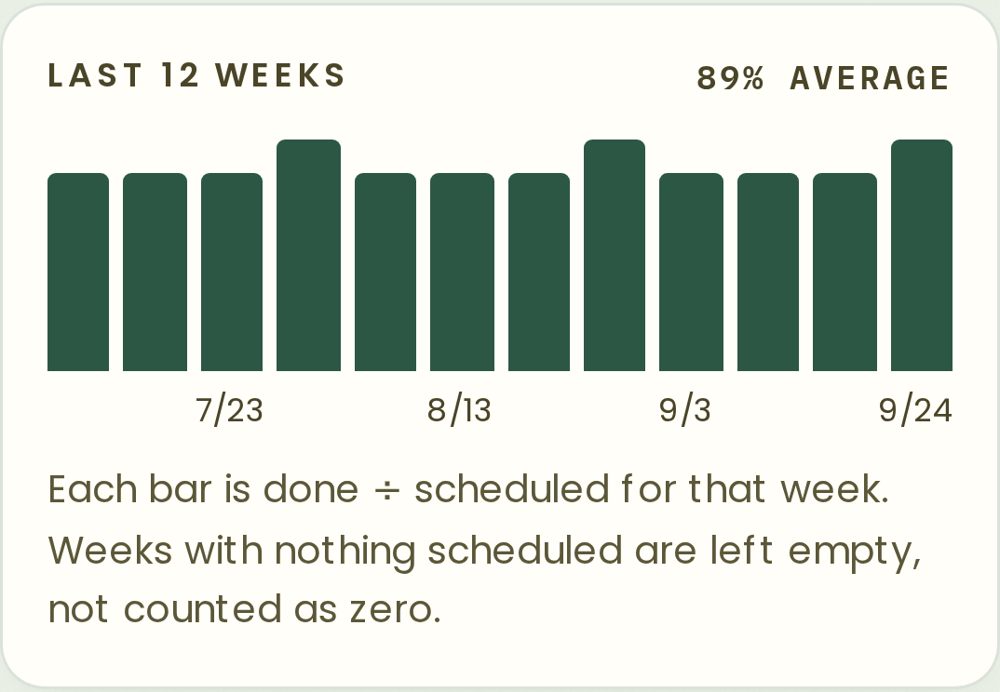
Twelve weeks of completion rate, in Streak’s Progress tab. This is the chart that tells you the truth.
Two beats sit outside the week. Quarterly, 30 minutes: renegotiate one bill, sweep subscriptions. Annual, 60 minutes: review the year, set one goal.
Tall bars with one short one in the middle is a person with a system and a bad week. A slow slide down the right-hand side is a system quietly dying, visible weeks before you would have noticed. Two missed days in a month is a 93% completion rate, which is a working system with a normal life attached to it.
Ten minutes a week is about 8.7 hours a year.
| Month one | Log everything. Judge nothing. You are taking a baseline, and you cannot improve a number you have not measured once. Pace check and the projections stay quiet until they have a reviewed month behind them. |
| Month two | One change, held. Suggestions start naming your actual categories. This is the month most people quit, and also the month the tool becomes worth having. |
| Month three | Now the trends mean something. Typical runs on your closed months, so typical becomes yours. Set a real goal with a date and point your split at it. |
After missed weeks, update current balances, unpaid bills and the next payday first. Keep earlier records and leave missing months open. Reconstruct a bounded period from a bank file when needed; do not invent entries to repair a streak.
Gap is only ever as accurate as what you feed it. Every one of these produces a number that looks perfectly plausible and is completely wrong.
Moving $200 from savings to checking is not income. Log it as a transfer, and only count money entering your household from outside it.
A $4 coffee feels beneath recording. Forty of them is $160, which is most of a utility bill.
A recurring utility bill can be Fixed even when its amount changes. Update the planned amount, confirm the real payment and mark whether it is essential.
Use the date the money was spent. Otherwise your charts describe your bank’s processing schedule.
One dentist visit does not mean you have a healthcare problem. Switch to Last 90 days before you conclude anything.
The most common of all, and the single biggest source of a misleading gap. The app raises it as a suggestion on its own.
| What you are seeing | Why | The fix |
|---|---|---|
| Everything is gone | Site data was cleared, or you opened the app somewhere else | Check the installed app on the original device first. Then restore a dated backup. |
| Entries vanish when I close the tab | You are in private mode, which keeps nothing | Open the installed app from your home screen instead |
| The gap looks far too big early in the month | Bills that have not been entered yet | Set up repeats in Money, Ledger |
| The gap looks far too small | A transfer logged as spending, or one large purchase | In Money, Ledger, sort by Largest and check the top few lines |
| My run reset and I did not miss a day | One habit due that day was not ticked | Backfill it in the month grid, then run fewer habits |
| Two devices show different numbers | There is no sync. Each device keeps its own record | Pick one device as the real one and restore a backup onto it |
| A habit did not tick itself | Streak does not read Gap; only a no-spend day ticks Log today’s spending | Tick it yourself in Streak. It takes a second. |
The apps tell you what is happening. The book tells you why, and what the sequence out of it looks like. Find the row that sounds like you.
| In the apps | What the book takes further |
|---|---|
| A recurring gap is negative. Check essentials, income, timing and required payments before choosing the next action. | When the Math Doesn’t Close, then defense before offense, and how to attack a fixed bill that feels immovable. |
| Income moves week to week. Tick My paycheck amount changes. Learn your baseline week and get one week ahead. | Appendix B, written for variable income, and why standard advice fails you. |
| Interest is eating the progress. Money, Debts. Run the simulator at $50 and $100, then point your split at the target. | Where debt sits in the order of operations, what to attack first, and the minimum payment that does not cover its own interest. |
| You keep money and then it disappears. Name a goal and let the split credit it the moment income arrives. | Why unnamed money gets spent, and the buffer that comes before everything. |
| Money comes in with no tax withheld. Plan, Estimated taxes. Turn on the reserve and set your rate. | Self-employment income in the United States, and the credits people miss. |
| The gap is healthy and doing nothing. Plan, Employer 401(k) match, then Money, Goals. | Employer matches, retirement accounts, and the order that compounds. |
Everything in the first pages is the daily loop. These six are the parts you will meet later, once the record has something in it.
In Insights, Where it goes prints a monthly guide beside groceries, dining out, gas, shopping and entertainment, and flags one running hot before the month ends. Guides are common starting points, not verdicts.
Money you lent is not spending and it is not a debt. It sits at the foot of Money, Debts, outside the gap, so it stops making your month look worse and you stop forgetting it exists.
The chart at the top of Money, Goals shows net transfers and withdrawals for goals and funds. Money held for future bills is not an investment. Goal dates use each goal’s own transfers in closed months.
In Insights, the categories that changed most against the month before, largest first. Read it on a Sunday: it names the thing to look at without you hunting through twenty lines.
Settings holds a backup file that restores everything, an encrypted version of it, a spreadsheet (CSV) for an accountant, and Print this month. The backup is the one that matters. Use it.
In Where you stand, money out is split where the fixed bills end and the variable spending begins. One you change with a phone call. The other you change a hundred small times.
Nothing here needs to be memorized. Keep this file on your phone and come back to the page you need.